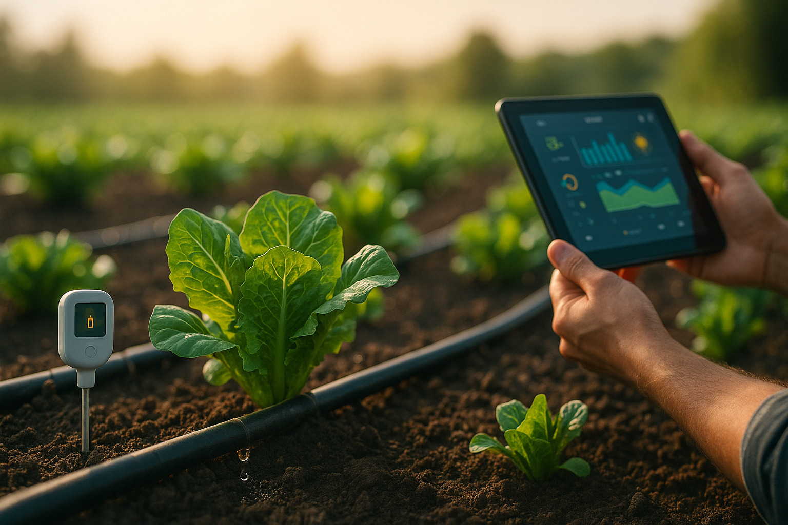

Irrigação Inteligente
Eficiência hídrica com sensores, controle remoto e economia regenerativa
Sobre o sistema
O sistema de Irrigação Inteligente Agroverso integra sensores de umidade, temperatura e previsão climática com controle automatizado via app. A irrigação ocorre apenas quando necessária, com ajustes em tempo real, promovendo economia de água e preservação da vida microbiana do solo.
Benefícios principais
- 💧 Economia de até 70% no uso de água com irrigação precisa
- 🌡️ Sensores de solo com leitura contínua de umidade e temperatura
- 📲 Controle remoto e agendamento pelo aplicativo Agroverso
- 🧠 Integração com dados meteorológicos para irrigação preditiva
- 🌱 Preserva a estrutura do solo e sua biodiversidade
Aplicações recomendadas
Ideal para hortas, plantações, pomares, viveiros, jardins e projetos agroecológicos de qualquer escala.